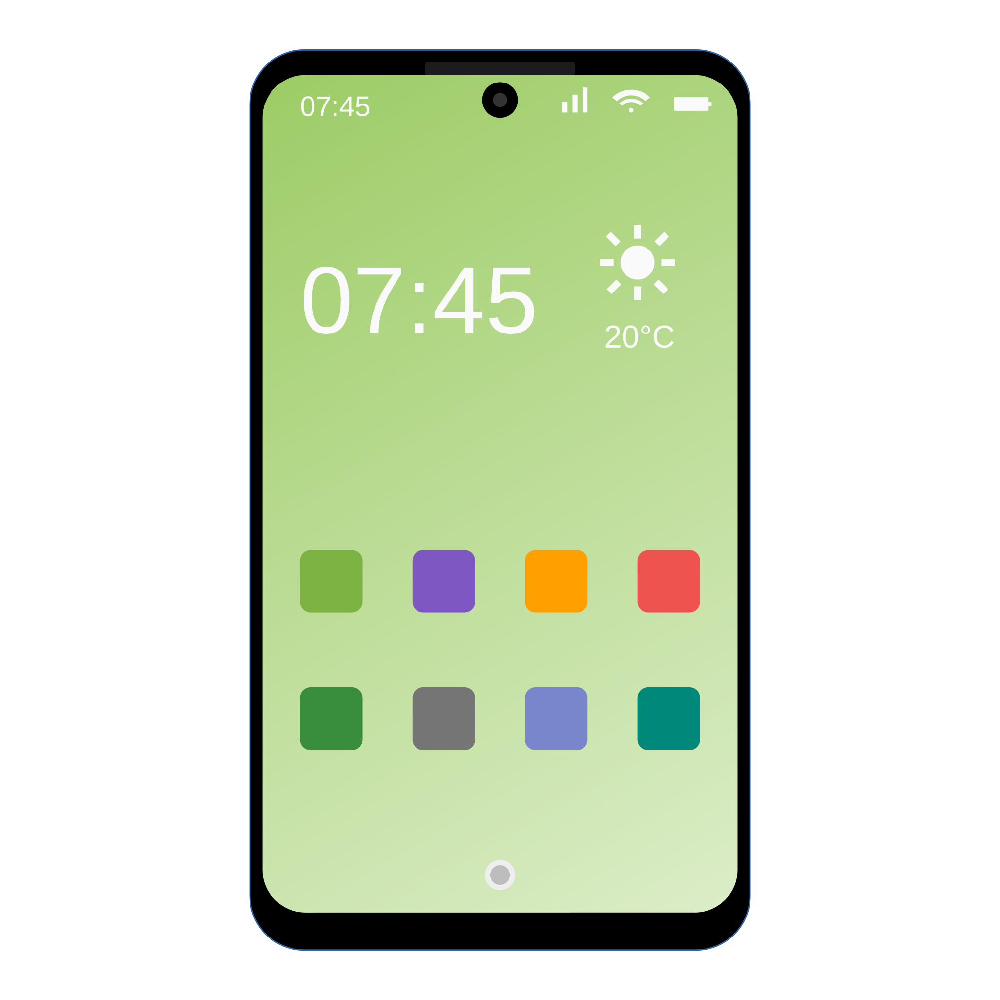

Warum Digitale Grundbildung?
Heutzutage wachsen die meisten Menschen in Österreich in einer Welt auf,
in der digitale Aspekte Teil unseres Lebens sind. Die meisten Schülerinnen und Schüler
haben in Form von Smartphones bereits vor dem Antritt der Mittelschule einen eigenen
Computer.
Auch wenn die neuen Generationen in einer digitalen Welt aufwachsen, bedeutet es nicht,
dass sie den Umgang damit gemeistert haben. Das Fach Digitale Grundbildung soll den Schülerinnen
und Schülern dabei helfen die digitale Welt verstehen zu lernen und sich dadurch sicherer in ihr
zu bewegen.
Laptops für alle Schülerinnen und Schüler
Schülerinnen und Schüler erhalten über die Mittelschule Laptop-Computer
von der OeAD. Für die Geräte
ist ein geringer Betrag als Eigenanteil zu bezahlen.
Von diesem Betrag kann man befreit werden, wenn man Beihilfen bezieht.
Diese Laptops gehören nach Bezahlung den Schülerinnen und Schülern,
dürfen also auch privat eingesetzt werden. Die Schule entscheidet jedoch
Programme, die auf allen Geräten installiert sein müssen. Nach Abschluss
der Mittelschule dürfen die Geräte beliebig verwendet werden.
Wenn das Lehrpersonal bestimmt, dass die Laptops im Unterricht verwendet werden,
sind die Geräte voll aufgeladen mitzunehmen.
Die Erziehungsberechtigten sollen darauf achten, wie die Schülerinnen und Schüler
die Laptops zuhause verwenden.
Die OeAD hat einige Tips für den Umgang mit den Geräten zusammengefasst.
Auch Smartphones sind Computer

Oft werden mit dem Begriff Computer nur Laptops und Desktop-Rechner in Verbindung
gebracht, in Wahrheit finden sich Computer jedoch in allen Aspekten des modernen Lebens.
Smartphones und Tablets können die meisten Aufgaben eines Laptops erfüllen. Auf Android
Geräten sowie iPhone und iPad können Office Programme installiert werden. Android Geräte
erlauben es sogar USB-Geräte anzuschließen (USB-Speicher, Tastaturen, Webcams etc.).
Auch in Smartwatches, Autos und immer mehr Haushaltsgeräten stecken Mikrochips
was auch diese Geräte zu Computern macht. Mit dem sogenannten "Internet of Things"
sind immer mehr Geräte von Computern gesteuert und miteinander verknüpft.